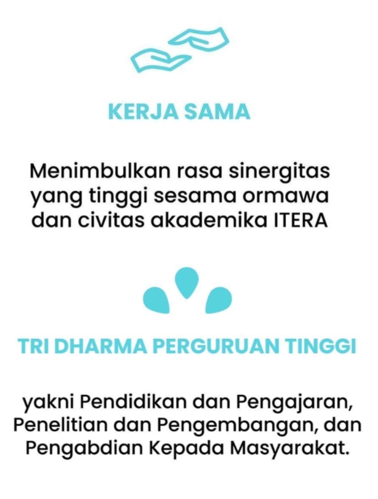
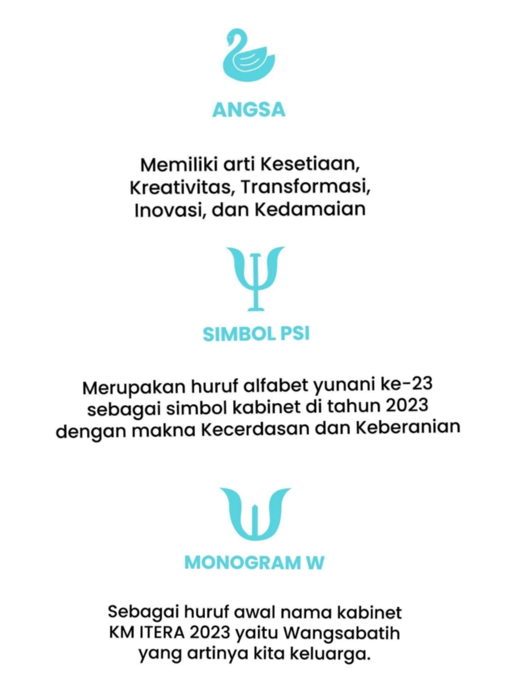

|
|
ITERA Institut Teknologi Sumatera, disingkat ITERA, adalah sebuah perguruan tinggi negeri yang terdapat di Provinsi Lampung di Pulau Sumatra. |
Sejarah ITERA ITERA didirikan berdasarkan Peraturan Presiden Nomor 124 Tahun 2014 tentang Pendirian Institut Teknologi Sumatera (Lembaran Negara Republik Indonesia Tahun 2014 Nomor 253)
yang ditetapkan Presiden Republik Indonesia Dr. H. Susilo Bambang Yudhoyono pada tanggal 6 Oktober 2014 dan diundangkan tanggal 9 Oktober 2014. |
|
|  |  |